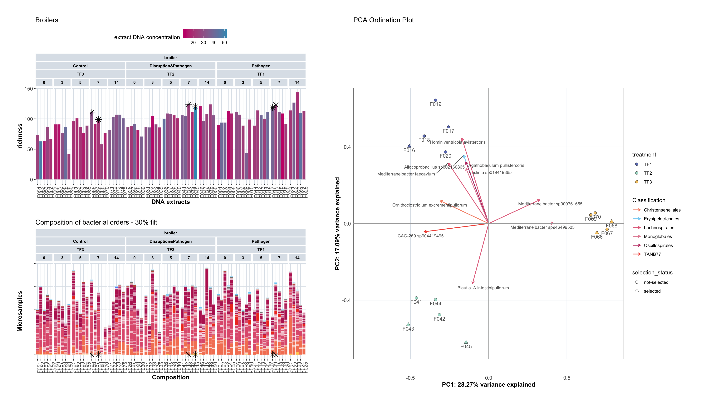
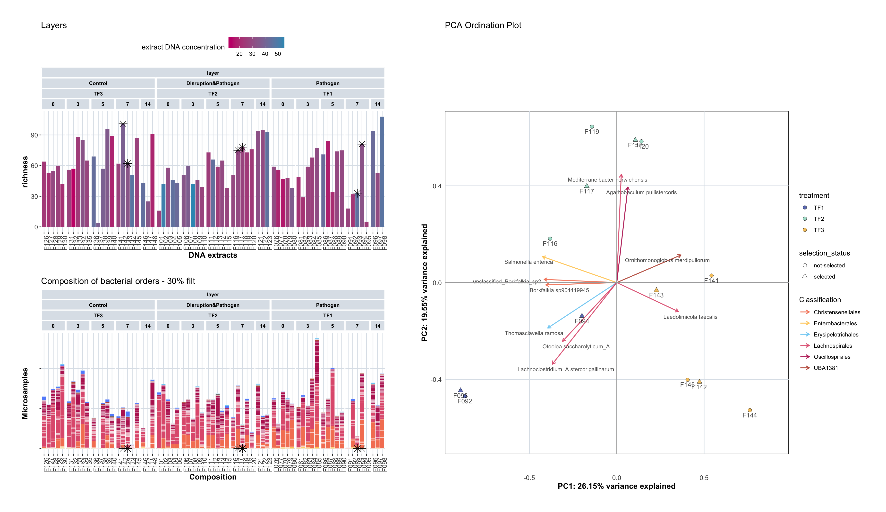

14 LMD Selection Analysis
14.1 Overview
This chapter identifies samples suitable for Laser Microdissection (LMD) based on DNA concentration and alpha diversity metrics. LMD requires high-quality DNA samples with sufficient quantity and taxonomic diversity for downstream spatial analyses. This analysis prioritizes samples with high richness and adequate DNA yield from day 7 post-infection samples.
14.3 Identify Best LMD Samples
This section identifies the best samples for LMD by ranking all day 7 samples based on combined richness and DNA concentration metrics.
# Select best LMD samples based on combined ranking of richness and DNA concentration
# Filter for day 7 samples only (optimal time point for LMD analysis)
# Rank by combined score: richness (weighted 1.2x) + DNA concentration
# Select top 2 samples per breed × treatment combination
best_samples_LMD <- extract_sample_div_metadata_macro %>%
filter(treatment != "TF0") %>%
filter(age == 7) %>%
group_by(animal_breed, treatment_expl, age) %>%
mutate(
richness_rank = rank(desc(richness), ties.method = "min"),
leftover_rank = rank(desc(DNA_concentration), ties.method = "min"),
combined_rank = richness_rank*1.2 + leftover_rank
) %>%
slice_min(combined_rank, n = 2, with_ties = FALSE) %>%
ungroup()14.4 Broiler Sample Selection
This section identifies and visualizes the best LMD samples for broilers based on combined ranking of richness and DNA concentration.
14.4.1 Visualize Broiler Samples
This section creates visualizations to assess broiler samples for LMD selection, showing richness, DNA concentration, and taxonomic composition.
# Plot 1: Broiler richness by animal, colored by DNA concentration
# Shows alpha diversity combined with DNA quality metrics
barplot_2 <- extract_sample_div_metadata_macro %>%
filter(treatment != "TF0") %>%
filter(animal_breed == "broiler") %>%
ggplot(aes(x = animal, y = richness, fill = DNA_concentration)) + # leftover_ng
geom_bar(stat = "identity", colour = "white", linewidth = 0.1) +
labs(x = "DNA extracts", y = "richness", fill = "Read type") +
scale_fill_gradient(low = "#c90076", high = "#3598bf", name = "extract DNA concentration") +
facet_nested(. ~ animal_breed + treatment_expl + treatment + age, scales = "free", space = "free") +
custom_ggplot_theme +
theme(axis.text.x = element_text(angle = 90, hjust = 1),
axis.text.y = element_text(), #axis.text.x = element_blank(),
legend.position = "top",
plot.margin = margin(0.2, 0.2, 0.2, 0.2)) +
ggtitle("Broilers")
# barplot_2
# Plot 2: Broiler taxonomic composition by order
# Shows community structure to ensure taxonomic diversity in selected samples
barplot_3 <- tidy_plot_genome_counts_filt_30_macro %>%
filter(animal_breed == "broiler") %>%
filter(treatment != "TF0") %>%
ggplot(aes(x = animal , y = count, fill = order)) +
geom_bar(stat="identity", colour="white", linewidth=0.1) + #plot stacked bars with white borders
scale_fill_manual(values = order_colors[-4], drop = FALSE) +
labs(x = "Composition",y = "Microsamples",fill = "Read type") +
facet_nested(. ~ animal_breed + treatment_expl + treatment + age, scales = "free", space = "free") +
custom_ggplot_theme +
theme(axis.text.x = element_text(angle = 90, hjust = 1),
axis.text.y = element_blank(),
legend.position = "none") +
ggtitle("Composition of bacterial orders - 30% filt")
# barplot_3
best_samples_LMD_broiler <- best_samples_LMD %>%
filter(animal_breed == 'broiler')14.4.2 Mark Selected Broiler Samples
This section marks the selected broiler samples on the visualization plots.
# Mark selected broiler samples with star symbols on the richness plot
barplot_4 <- barplot_2 +
geom_point(
data = best_samples_LMD_broiler,
aes(x = animal, y = richness),
shape = 8, # star shape
size = 4,
color = "black",
inherit.aes = FALSE
)
barplot_5 <- barplot_3 +
geom_point(
data = best_samples_LMD_broiler,
aes(x = animal, y = 1),
shape = 8, # star shape
size = 4,
color = "black",
inherit.aes = FALSE
)
# barplot_4/barplot_514.4.3 PCA Analysis for Broilers
This section performs PCA analysis on broiler samples to visualize community structure and highlight selected samples in ordination space.
# Prepare community matrix for PCA analysis
# Filter for broiler samples at day 7, convert to wide format, and normalize to percentages
PCA_df <- tidy_plot_genome_counts_filt_30_macro_closed %>%
filter(animal_breed == "broiler") %>%
filter(age == 7) %>%
# Remove metadata
select(genome, microsample, count) %>%
# Make tidy df into wide df
pivot_wider(
names_from = genome,
values_from = count,
# Fill missing values with 0
values_fill = 0) %>%
# Remove taxa (columns) that are zero for all leftover samples (rows)
select(where(~ any(. != 0))) %>%
# scale each sample to 100 (= closure to 100, not required, but common)
mutate(across(-microsample, ~ . / rowSums(across(where(is.numeric))) * 100 )) %>%
# turn the column 'microsample'into the name of the rows of the df
column_to_rownames(var = "microsample")
# Create sample metadata with selection status for visualization
MACRO_sample_metadata <- sample_metadata_macro %>%
mutate(microsample = sample) %>%
select(microsample, animal, animal_breed, age, treatment, treatment_expl) %>%
mutate(selection_status = if_else(animal %in% best_samples_LMD_broiler$animal,
"selected",
"not-selected"))
# Perform PCA with CLR transformation
pca_result <- perform_pca(PCA_df, z_delete = TRUE)[1] "Zeros found"No. adjusted imputations: 383
Rows (samples) removed after zero replacement: 0
Columns (taxa) removed after zero replacement: 40 # Create PCA ordination plot
# Colors indicate treatment, shapes indicate selection status (selected vs not-selected)
p <- plot_pca(pca_result$pca_result,
samples_color_metadata = "treatment" ,
samples_shape_metadata = "selection_status",
samples_color_value = treatment_colours_bright,
loadings_color_metadata = "order",
loadings_color_value = order_colors,
loadings_taxon_level = "species",
show_labels = TRUE,
MACRO_sample_metadata, genome_metadata, order_colors,
custom_ggplot_theme)
p2 = p
# p2 # Individual plot commented out - used in combined plot
# # Calculate Euclidean distance on CLR data
# pca_animals_dist_matrix <- vegdist(pca_result$df_clr_dist, method = "euclidean")
# pca_animals_dist_matrix# Combined visualization: barplots and PCA for broilers
# Shows richness, composition, and ordination space with selected samples highlighted
(barplot_4/barplot_5) | p2
14.5 Layer Sample Selection
This section identifies and visualizes the best LMD samples for layers based on combined ranking of richness and DNA concentration.
14.5.1 Visualize Layer Samples
This section creates visualizations to assess layer samples for LMD selection, showing richness, DNA concentration, and taxonomic composition.
# Plot 1: Layer richness by animal, colored by DNA concentration
# Shows alpha diversity combined with DNA quality metrics
barplot_2 <- extract_sample_div_metadata_macro %>%
filter(treatment != "TF0") %>%
filter(animal_breed == "layer") %>%
ggplot(aes(x = animal, y = richness, fill = DNA_concentration)) +
geom_bar(stat = "identity", colour = "white", linewidth = 0.1) +
labs(x = "DNA extracts", y = "richness", fill = "Read type") +
scale_fill_gradient(low = "#c90076", high = "#3598bf", name = "extract DNA concentration") +
facet_nested(. ~ animal_breed + treatment_expl + treatment + age, scales = "free", space = "free") +
custom_ggplot_theme +
theme(axis.text.x = element_text(angle = 90, hjust = 1),
axis.text.y = element_text(),
legend.position = "top",
plot.margin = margin(0.2, 0.2, 0.2, 0.2)) +
ggtitle("Layers")
# barplot_2
# Plot 2: Layer taxonomic composition by order
# Shows community structure to ensure taxonomic diversity in selected samples
barplot_3 <- tidy_plot_genome_counts_filt_30_macro %>%
filter(animal_breed == "layer") %>%
filter(treatment != "TF0") %>%
ggplot(aes(x = animal , y = count, fill = order)) +
geom_bar(stat="identity", colour="white", linewidth=0.1) +
scale_fill_manual(values = order_colors[-4], drop = FALSE) +
labs(x = "Composition",y = "Microsamples",fill = "Read type") +
facet_nested(. ~ animal_breed + treatment_expl + treatment + age, scales = "free", space = "free") +
custom_ggplot_theme +
theme(axis.text.x = element_text(angle = 90, hjust = 1),
axis.text.y = element_blank(),
legend.position = "none") +
ggtitle("Composition of bacterial orders - 30% filt")
# barplot_3
# Note: best_samples_LMD was already created in lmd_selection_all_05B chunk
# This section just creates the layer-specific visualizations14.5.2 Mark Selected Layer Samples
This section marks the selected layer samples on the visualization plots.
# Mark selected layer samples with star symbols on the richness plot
barplot_4 <- barplot_2 +
geom_point(
data = best_samples_LMD_layer,
aes(x = animal, y = richness),
shape = 8, # star shape
size = 4,
color = "black",
inherit.aes = FALSE
)
barplot_5 <- barplot_3 +
geom_point(
data = best_samples_LMD_layer,
aes(x = animal, y = 1),
shape = 8, # star shape
size = 4,
color = "black",
inherit.aes = FALSE
)
# barplot_4/barplot_514.5.3 PCA Analysis for Layers
This section performs PCA analysis on layer samples to visualize community structure and highlight selected samples in ordination space.
# Prepare community matrix for PCA analysis
# Filter for layer samples at day 7, convert to wide format, and normalize to percentages
PCA_df <- tidy_plot_genome_counts_filt_30_macro_closed %>%
filter(animal_breed == "layer") %>%
filter(age == 7) %>%
# Remove metadata
select(genome, microsample, count) %>%
# Make tidy df into wide df
pivot_wider(
names_from = genome,
values_from = count,
# Fill missing values with 0
values_fill = 0) %>%
# Remove taxa (columns) that are zero for all leftover samples (rows)
select(where(~ any(. != 0))) %>%
# scale each sample to 100 (= closure to 100, not required, but common)
mutate(across(-microsample, ~ . / rowSums(across(where(is.numeric))) * 100 )) %>%
# turn the column 'microsample'into the name of the rows of the df
column_to_rownames(var = "microsample")
# Create sample metadata with selection status for visualization
MACRO_sample_metadata <- sample_metadata_macro %>%
mutate(microsample = sample) %>%
select(microsample, animal, animal_breed, age, treatment, treatment_expl) %>%
mutate(selection_status = if_else(animal %in% best_samples_LMD_layer$animal,
"selected",
"not-selected"))
# Perform PCA with CLR transformation
pca_result <- perform_pca(PCA_df, z_delete = TRUE)[1] "Zeros found"No. adjusted imputations: 254
Rows (samples) removed after zero replacement: 2
Columns (taxa) removed after zero replacement: 43 # Create PCA ordination plot
# Colors indicate treatment, shapes indicate selection status (selected vs not-selected)
p <- plot_pca(pca_result$pca_result,
samples_color_metadata = "treatment" ,
samples_shape_metadata = "selection_status",
samples_color_value = treatment_colours_bright,
loadings_color_metadata = "order",
loadings_color_value = order_colors,
loadings_taxon_level = "species",
show_labels = TRUE,
MACRO_sample_metadata, genome_metadata, order_colors,
custom_ggplot_theme)
p2 = p
# p2 # Individual plot commented out - used in combined plot
# # Calculate Euclidean distance on CLR data
# pca_animals_dist_matrix <- vegdist(pca_result$df_clr_dist, method = "euclidean")
# pca_animals_dist_matrix# Combined visualization: barplots and PCA for layers
# Shows richness, composition, and ordination space with selected samples highlighted
(barplot_4/barplot_5) | p2 